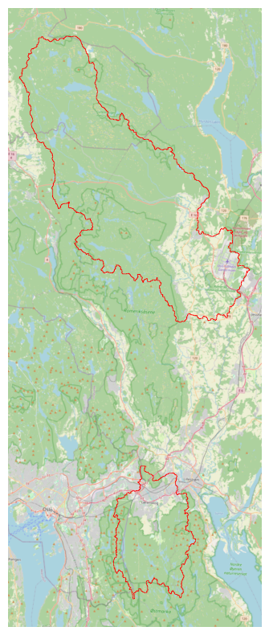
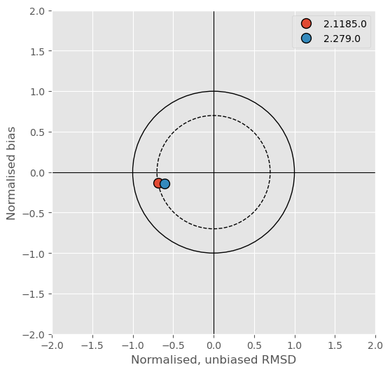
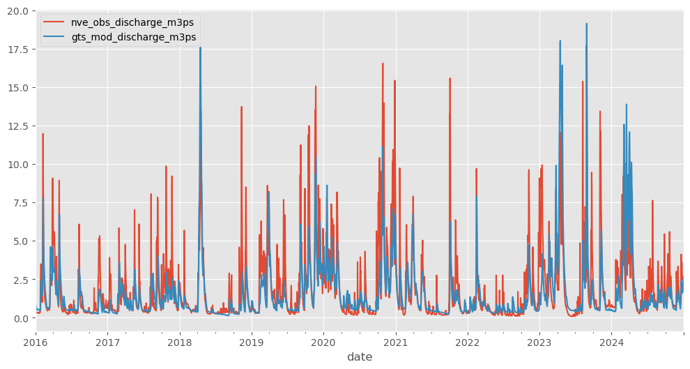
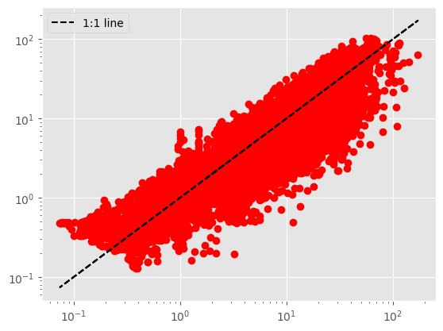
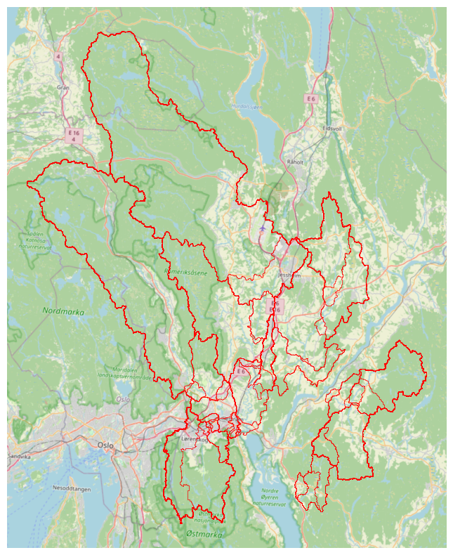

import sys
import warnings
sys.path.append("/home/jovyan/projects/mjosa_water_temp/code")
sys.path.append("/home/jovyan/development/nivapy3/nivapy3")
import glob
import os
import time
from urllib.error import URLError
import contextily as cx
import geopandas as gpd
import matplotlib.pyplot as plt
import nivapy3 as nivapy
import pandas as pd
import requests
import stats
import utils
warnings.simplefilter("ignore")
plt.style.use("ggplot")TEOTIL3 for Lillestrøm kommune
# Monkey-patch requests to avoid Vann-nett SSL error
_original_request = requests.Session.request
def _patched_request(self, method, url, **kwargs):
kwargs.setdefault("verify", False)
return _original_request(self, method, url, **kwargs)
requests.Session.request = _patched_requestNotebook 02: Data from Vannmiljø, Vann-Nett and NVE
Jan Erik Bøgeberg and Kristian Moseby have proposed monitoring sites in Vannmiljø for the main catchments of interest around Lillestrøm Kommune. This notebook downloads data from Vannmiljø and Vann-Nett for these areas. It also estimates daily discharge using NVE’s Grid Time Series API.
1. Sites and waterbodies of interest
See e-mail from Jan Erik received 24.02.2026.
# Read site data
xl_path = r"../data/lillestrom_monitoring_sites.xlsx"
stn_df = pd.read_excel(xl_path, sheet_name="chem_stns")
stn_df| catchment | station_id | station_name | regine | wb_id | wb_name | lon | lat | comment | |
|---|---|---|---|---|---|---|---|---|---|
| 0 | Sagelva | 002-46599 | Sagelva ved Skjetten bro (F3) | 002.CBA0 | 002-3899-R | Fjellhamarelva - Sagelva | 11.01695 | 59.95850 | Downstream |
| 1 | Sagelva | 002-63540 | Fjellhammarelva (F10) | 002.CBA0 | 002-3899-R | Fjellhamarelva - Sagelva | 10.99617 | 59.94419 | Slightly upstream |
| 2 | Nitelva | 002-30586 | Rud Nitelva (N8 ) | 002.CB0 | 002-3891-R | Nedre Nitelva | 11.05700 | 59.94553 | Downstream |
| 3 | Nitelva | 002-30578 | Kjellerholen Nitelva (N6) | 002.CC0 | 002-1638-R | Nitelva Slattum-Kjeller | 11.00850 | 59.97925 | Slightly upstream |
| 4 | Leira | 002-29659 | Leira ved Borgen bru (L5) | 002.CAA0 | 002-3384-R | Leira nedstrøms Krokfoss | 11.10032 | 59.95036 | Downstream |
| 5 | Leira | 002-30584 | Leira ved Leirsund (L8) | 002.CAA0 | 002-3384-R | Leira nedstrøms Krokfoss | 11.08849 | 59.99755 | Slightly upstream |
| 6 | Rømua | 002-28960 | Rømua ved Lørenfallet - RØM1 | 002.D2Z | 002-3659-R | Rømua | 11.22099 | 60.02163 | Downstream |
| 7 | Jeksla | 002-30593 | Jeksla ved Haugli, J14 | 002.CAA0 | 002-599-R | Jeksla | 11.10637 | 60.00199 | Downstream. Small part of regine |
| 8 | Åa | 002-60929 | Fossåa ved Sylta (ÅA1) | 002.D3Z | 002-3685-R | Fossåa | 11.30018 | 59.99209 | Downstream |
| 9 | Åa | 002-60963 | Sloråa ved Bruvollen (ÅA3) | 002.D3Z | 002-3687-R | Sloråa | 11.34807 | 59.98512 | Upstream. North branch |
| 10 | Åa | 002-60964 | Kauserudåa før samløp Sloråa (ÅA4) | 002.D3Z | 002-3692-R | Stensrudåa - Korsåa | 11.34823 | 59.98391 | Upstream. South branch |
| 11 | Gansåa | 002-60933 | Gansåa nedstrøms Dalen RA (BD) | 002.C5 | 002-3655-R | Gansåa | 11.22275 | 59.86139 | Downstream. Small part of regine |
2. Data from Vannmiljø
2.1. data for sites
The code below gets data for each site suggested by Jan Erik and Kristian.
# Pars of interest
vm_par_list = [
"N-TOT",
"N-NO3",
"N-NH4",
"P-TOT",
"P-PO4",
"P-ORTO",
"TOC",
"STS",
]# Query Vannmiljø
data = {
"FromRegDate": "1900-01-01",
"WaterLocationCodeFilter": stn_df["station_id"].tolist(),
}
wc_df = nivapy.da.post_data_to_vannmiljo("GetRegistrations", data=data)
# Tidy to cols of interest
names_dict = {
"WaterLocationID": "station_id",
"WaterLocationCode": "station_code",
"Name": "station_name",
"WaterCategory": "category",
"CoordX": "utm33_east",
"CoordY": "utm33_north",
"FylkeID": "fylke_id",
"Fylke": "fylke_name",
"KommuneID": "kommune_id",
"Kommune": "kommune_name",
"VassdragsomradeID": "vassom_id",
"Vassdragsomrade": "vassom_name",
"VannomradeID": "vannom_id",
"Vannomrade": "vannom_name",
"VannregionID": "vannreg_id",
"Vannregion": "vannreg_name",
"WaterBodyID": "waterbody_id",
"WaterBody": "waterbody_name",
"FeatureType": "feature_type",
"ActivityID": "activity_id",
"ActivityName": "activity_name",
"Employer": "employer",
"Contractor": "contractor",
"MediumName": "medium_name",
"SamplingTime": "sample_date",
"UpperDepth": "upper_depth",
"LowerDepth": "lower_depth",
"FilteredSample": "filtered",
"ParameterID": "par_id",
"ParameterName": "par_name",
"ValueOperator": "flag",
"RegValue": "value",
"Unit": "unit",
"DetectionLimit": "lod",
"QuantificationLimit": "loq",
}
stn_cols = [
"station_id",
"station_code",
"station_name",
"feature_type",
"category",
"fylke_id",
"fylke_name",
"kommune_id",
"kommune_name",
"vassom_id",
"vassom_name",
"vannom_id",
"vannom_name",
"vannreg_id",
"vannreg_name",
"waterbody_id",
"waterbody_name",
"utm33_east",
"utm33_north",
]
wc_df = wc_df[names_dict.keys()].rename(columns=names_dict)
wc_df = wc_df.query("medium_name == 'Ferskvann'")
wc_df = wc_df.query("par_id in @vm_par_list")
wc_df["sample_date"] = pd.to_datetime(wc_df["sample_date"])
vm_stn_df = (
wc_df[stn_cols].drop_duplicates(subset="station_code").reset_index(drop=True)
)
vm_stn_gdf = gpd.GeoDataFrame(
vm_stn_df,
geometry=gpd.points_from_xy(
vm_stn_df["utm33_east"], vm_stn_df["utm33_north"], crs="epsg:25833"
),
)
# Prepare to convert to wide
wc_df_wide = wc_df.copy()
wc_df_wide["filtered"] = wc_df_wide["filtered"].map({True: "Filt", False: "Ufilt"})
wc_df_wide["par_unit"] = (
wc_df_wide["par_id"]
+ "_"
+ wc_df_wide["filtered"].astype(str)
+ "_"
+ wc_df_wide["unit"]
)
wc_df_wide = wc_df_wide.drop(
columns=["par_id", "par_name", "flag", "unit", "filtered", "lod", "loq"]
)
wc_df_wide["upper_depth"] = wc_df_wide["upper_depth"].fillna(0)
wc_df_wide["lower_depth"] = wc_df_wide["lower_depth"].fillna(0)
wc_df_wide = wc_df_wide.dropna(subset="value").fillna("none")
id_cols = [col for col in wc_df_wide.columns if col != "value"]
# Save duplicated values for checking
dup_df = wc_df_wide[wc_df_wide.duplicated(subset=id_cols, keep=False)].sort_values(
id_cols
)
if len(dup_df) > 0:
print(
"The dataset contains duplicates. These will be saved for checking and then averaged."
)
dup_xlsx = r"../data/vannmiljo_duplicates_stations.xlsx"
dup_df.to_excel(dup_xlsx, index=False)
# Average duplicates
wc_df_wide = wc_df_wide.groupby(id_cols).mean().reset_index()
# Convert to wide
wc_df_wide = wc_df_wide.set_index(id_cols).unstack("par_unit")
wc_df_wide.columns = wc_df_wide.columns.get_level_values(1)
wc_df_wide = wc_df_wide.reset_index()
# Tidy pars
# Some labs report NO3 as filtered and others as unfiltered, but these are dissolved, so it doesn't matter
wc_df_wide["NO3_µg/l"] = wc_df_wide["N-NO3_Ufilt_µg/l N"].fillna(
wc_df_wide["N-NO3_Filt_µg/l N"]
)
wc_df_wide = wc_df_wide.drop(
columns=[
"N-NO3_Ufilt_µg/l N",
"N-NO3_Filt_µg/l N",
]
)
wc_df_wide = wc_df_wide.rename(
columns={
"N-TOT_Ufilt_µg/l N": "TOTN_µg/l",
"N-NH4_Ufilt_µg/l N": "NH4_µg/l",
"P-ORTO_Filt_µg/l P": "SRP_µg/l",
"P-ORTO_Ufilt_µg/l P": "TRP_µg/l",
"P-PO4_Filt_µg/l P": "DIP_µg/l",
"P-PO4_Ufilt_µg/l P": "TIP_µg/l",
"P-TOT_Filt_µg/l P": "TDP_µg/l",
"P-TOT_Ufilt_µg/l P": "TOTP_µg/l",
"STS_Ufilt_mg/l": "SS_mg/l",
"TOC_Ufilt_mg/l C": "TOC_mg/l",
}
)
# Save
vm_xl_path = r"../data/vannmiljo_data_stations.xlsx"
with pd.ExcelWriter(vm_xl_path) as writer:
vm_stn_df.to_excel(writer, sheet_name="vm_stations", index=False)
wc_df.to_excel(writer, sheet_name="data_long", index=False)
wc_df_wide.to_excel(writer, sheet_name="data_wide", index=False)
wc_df_wide.head()The dataset contains duplicates. These will be saved for checking and then averaged.| par_unit | station_id | station_code | station_name | category | utm33_east | utm33_north | fylke_id | fylke_name | kommune_id | kommune_name | ... | TOTN_µg/l | SRP_µg/l | TRP_µg/l | DIP_µg/l | TIP_µg/l | TDP_µg/l | TOTP_µg/l | SS_mg/l | TOC_mg/l | NO3_µg/l |
|---|---|---|---|---|---|---|---|---|---|---|---|---|---|---|---|---|---|---|---|---|---|
| 0 | 28960 | 002-28960 | Rømua ved Lørenfallet - RØM1 | R | 289429.5 | 6659838.3 | 32 | Akershus | 3205 | Lillestrøm | ... | 1790.0 | NaN | NaN | 16.0 | NaN | NaN | 54.0 | 22.0 | 7.7 | NaN |
| 1 | 28960 | 002-28960 | Rømua ved Lørenfallet - RØM1 | R | 289429.5 | 6659838.3 | 32 | Akershus | 3205 | Lillestrøm | ... | 1080.0 | NaN | NaN | 8.0 | NaN | NaN | 34.0 | 6.8 | 5.9 | NaN |
| 2 | 28960 | 002-28960 | Rømua ved Lørenfallet - RØM1 | R | 289429.5 | 6659838.3 | 32 | Akershus | 3205 | Lillestrøm | ... | 1430.0 | NaN | NaN | 6.0 | NaN | NaN | 34.0 | 14.0 | 4.2 | NaN |
| 3 | 28960 | 002-28960 | Rømua ved Lørenfallet - RØM1 | R | 289429.5 | 6659838.3 | 32 | Akershus | 3205 | Lillestrøm | ... | 1100.0 | NaN | NaN | 1.0 | NaN | NaN | 40.0 | 10.0 | 4.5 | NaN |
| 4 | 28960 | 002-28960 | Rømua ved Lørenfallet - RØM1 | R | 289429.5 | 6659838.3 | 32 | Akershus | 3205 | Lillestrøm | ... | 2260.0 | NaN | NaN | 2.0 | NaN | NaN | 65.0 | 24.0 | 4.7 | NaN |
5 rows × 38 columns
2.3. Data for waterbodies
Waterbody status is often determined using data from several sites. Using the Vannmiljø API, it is possible to get all data used for each waterbody, rather than just for specific sites. The code below gets data for all sites associated with the waterbody IDs in stn_df.
# Query Vannmiljø
data = {
"FromRegDate": "1900-01-01",
"WaterBodyIDFilter": stn_df["wb_id"].tolist(),
}
wc_df = nivapy.da.post_data_to_vannmiljo("GetRegistrations", data=data)
# Tidy to cols of interest
names_dict = {
"WaterLocationID": "station_id",
"WaterLocationCode": "station_code",
"Name": "station_name",
"WaterCategory": "category",
"CoordX": "utm33_east",
"CoordY": "utm33_north",
"FylkeID": "fylke_id",
"Fylke": "fylke_name",
"KommuneID": "kommune_id",
"Kommune": "kommune_name",
"VassdragsomradeID": "vassom_id",
"Vassdragsomrade": "vassom_name",
"VannomradeID": "vannom_id",
"Vannomrade": "vannom_name",
"VannregionID": "vannreg_id",
"Vannregion": "vannreg_name",
"WaterBodyID": "waterbody_id",
"WaterBody": "waterbody_name",
"FeatureType": "feature_type",
"ActivityID": "activity_id",
"ActivityName": "activity_name",
"Employer": "employer",
"Contractor": "contractor",
"MediumName": "medium_name",
"SamplingTime": "sample_date",
"UpperDepth": "upper_depth",
"LowerDepth": "lower_depth",
"FilteredSample": "filtered",
"ParameterID": "par_id",
"ParameterName": "par_name",
"ValueOperator": "flag",
"RegValue": "value",
"Unit": "unit",
"DetectionLimit": "lod",
"QuantificationLimit": "loq",
}
stn_cols = [
"station_id",
"station_code",
"station_name",
"feature_type",
"category",
"fylke_id",
"fylke_name",
"kommune_id",
"kommune_name",
"vassom_id",
"vassom_name",
"vannom_id",
"vannom_name",
"vannreg_id",
"vannreg_name",
"waterbody_id",
"waterbody_name",
"utm33_east",
"utm33_north",
]
wc_df = wc_df[names_dict.keys()].rename(columns=names_dict)
wc_df = wc_df.query("medium_name == 'Ferskvann'")
wc_df = wc_df.query("par_id in @vm_par_list")
wc_df["sample_date"] = pd.to_datetime(wc_df["sample_date"])
vm_stn_df = (
wc_df[stn_cols].drop_duplicates(subset="station_code").reset_index(drop=True)
)
vm_stn_gdf = gpd.GeoDataFrame(
vm_stn_df,
geometry=gpd.points_from_xy(
vm_stn_df["utm33_east"], vm_stn_df["utm33_north"], crs="epsg:25833"
),
)
# Prepare to convert to wide
wc_df_wide = wc_df.copy()
wc_df_wide["filtered"] = wc_df_wide["filtered"].map({True: "Filt", False: "Ufilt"})
wc_df_wide["par_unit"] = (
wc_df_wide["par_id"]
+ "_"
+ wc_df_wide["filtered"].astype(str)
+ "_"
+ wc_df_wide["unit"]
)
wc_df_wide = wc_df_wide.drop(
columns=["par_id", "par_name", "flag", "unit", "filtered", "lod", "loq"]
)
wc_df_wide["upper_depth"] = wc_df_wide["upper_depth"].fillna(0)
wc_df_wide["lower_depth"] = wc_df_wide["lower_depth"].fillna(0)
wc_df_wide = wc_df_wide.dropna(subset="value").fillna("none")
id_cols = [col for col in wc_df_wide.columns if col != "value"]
# Save duplicated values for checking
dup_df = wc_df_wide[wc_df_wide.duplicated(subset=id_cols, keep=False)].sort_values(
id_cols
)
if len(dup_df) > 0:
print(
"The dataset contains duplicates. These will be saved for checking and then averaged."
)
dup_xlsx = r"../data/vannmiljo_duplicates_waterbodies.xlsx"
dup_df.to_excel(dup_xlsx, index=False)
# Average duplicates
wc_df_wide = wc_df_wide.groupby(id_cols).mean().reset_index()
# Convert to wide
wc_df_wide = wc_df_wide.set_index(id_cols).unstack("par_unit")
wc_df_wide.columns = wc_df_wide.columns.get_level_values(1)
wc_df_wide = wc_df_wide.reset_index()
# Tidy pars
# Some labs report NO3 as filtered and others as unfiltered, but these are dissolved, so it doesn't matter
wc_df_wide["NO3_µg/l"] = wc_df_wide["N-NO3_Ufilt_µg/l N"].fillna(
wc_df_wide["N-NO3_Filt_µg/l N"]
)
wc_df_wide = wc_df_wide.drop(
columns=[
"N-NO3_Ufilt_µg/l N",
"N-NO3_Filt_µg/l N",
]
)
wc_df_wide = wc_df_wide.rename(
columns={
"N-TOT_Ufilt_µg/l N": "TOTN_µg/l",
"N-NH4_Ufilt_µg/l N": "NH4_µg/l",
"P-ORTO_Filt_µg/l P": "SRP_µg/l",
"P-ORTO_Ufilt_µg/l P": "TRP_µg/l",
"P-PO4_Filt_µg/l P": "DIP_µg/l",
"P-PO4_Ufilt_µg/l P": "TIP_µg/l",
"P-TOT_Filt_µg/l P": "TDP_µg/l",
"P-TOT_Ufilt_µg/l P": "TOTP_µg/l",
"STS_Ufilt_mg/l": "SS_mg/l",
"TOC_Ufilt_mg/l C": "TOC_mg/l",
}
)
# Save
vm_xl_path = r"../data/vannmiljo_data_waterbodies.xlsx"
with pd.ExcelWriter(vm_xl_path) as writer:
vm_stn_df.to_excel(writer, sheet_name="vm_stations", index=False)
wc_df.to_excel(writer, sheet_name="data_long", index=False)
wc_df_wide.to_excel(writer, sheet_name="data_wide", index=False)
wc_df_wide.head()The dataset contains duplicates. These will be saved for checking and then averaged.| par_unit | station_id | station_code | station_name | category | utm33_east | utm33_north | fylke_id | fylke_name | kommune_id | kommune_name | ... | TOTN_µg/l | SRP_µg/l | TRP_µg/l | DIP_µg/l | TIP_µg/l | TDP_µg/l | TOTP_µg/l | SS_mg/l | TOC_mg/l | NO3_µg/l |
|---|---|---|---|---|---|---|---|---|---|---|---|---|---|---|---|---|---|---|---|---|---|
| 0 | 28251 | 002-28251 | Nitelva ved Åmot | R | 280231.9011 | 6.651353e+06 | 32 | Akershus | 3205 | Lillestrøm | ... | 2600.0 | NaN | NaN | NaN | NaN | NaN | 92.0 | NaN | NaN | 1550.0 |
| 1 | 28251 | 002-28251 | Nitelva ved Åmot | R | 280231.9011 | 6.651353e+06 | 32 | Akershus | 3205 | Lillestrøm | ... | 1275.0 | NaN | NaN | NaN | NaN | NaN | 80.0 | NaN | NaN | NaN |
| 2 | 28251 | 002-28251 | Nitelva ved Åmot | R | 280231.9011 | 6.651353e+06 | 32 | Akershus | 3205 | Lillestrøm | ... | NaN | NaN | NaN | NaN | NaN | NaN | 88.0 | NaN | NaN | NaN |
| 3 | 28251 | 002-28251 | Nitelva ved Åmot | R | 280231.9011 | 6.651353e+06 | 32 | Akershus | 3205 | Lillestrøm | ... | 2150.0 | NaN | NaN | NaN | NaN | NaN | 108.0 | NaN | NaN | 640.0 |
| 4 | 28251 | 002-28251 | Nitelva ved Åmot | R | 280231.9011 | 6.651353e+06 | 32 | Akershus | 3205 | Lillestrøm | ... | 2300.0 | NaN | NaN | NaN | NaN | NaN | 93.0 | NaN | NaN | 1250.0 |
5 rows × 39 columns
3. Data from Vann-nett
# Quality elements of interest
vn_par_list = [
"Total nitrogen",
"Ammonia",
"Total oxidised Nitrogen",
"Total phosphorous",
"Orthophosphate",
"Phosphate",
"Total organic carbon",
]df_list = []
for wb_id in stn_df["wb_id"].tolist():
vn_df = nivapy.da.get_data_from_vannnett(wb_id, "ecological").query(
"parameter in @vn_par_list"
)
df_list.append(vn_df)
vn_df = pd.concat(df_list, axis="rows")
# Save
vn_df.to_excel(r"../data/vann-nett_data.xlsx", index=False)
vn_df.head()| waterbody_id | category | element | parameter | status | eqr | neqr | value | reference_value | unit | status_limits | year_from | year_to | sample_count | source | data_quality | |
|---|---|---|---|---|---|---|---|---|---|---|---|---|---|---|---|---|
| 13 | 002-3899-R | PhysicoChemical | QE3-1-6-1 - Nitrogen conditions | Ammonia | Moderate | 0.1024 | 0.4072 | 97.670000 | 10.0 | µg/l | 30.0;60.0;100.0;160.0 | 2021 | 2024 | 30.0 | Vannmiljø | Measured |
| 14 | 002-3899-R | PhysicoChemical | QE3-1-6-1 - Nitrogen conditions | Total nitrogen | Moderate | 0.3825 | 0.5576 | 849.763285 | 325.0 | µg/l | 550.0;775.0;1325.0;2025.0 | 2019 | 2025 | 207.0 | Vannmiljø | Measured |
| 15 | 002-3899-R | PhysicoChemical | QE3-1-6-1 - Nitrogen conditions | Total organic carbon | Not classified | NaN | NaN | 7.331736 | NaN | mg/l C | 2019 | 2025 | 167.0 | Vannmiljø | Measured | |
| 16 | 002-3899-R | PhysicoChemical | QE3-1-6-1 - Nitrogen conditions | Total oxidised Nitrogen | Not classified | NaN | NaN | 543.166666 | NaN | µg/l | 2021 | 2022 | 12.0 | Vannmiljø | Measured | |
| 17 | 002-3899-R | PhysicoChemical | QE3-1-6-2 - Phosphorus Conditions | Orthophosphate | Moderate | NaN | 0.5000 | 42.089655 | NaN | µg/l | 2019 | 2023 | 29.0 | Vannmiljø | Measured |
4. Data from NVE
NVE monitoring data for the stations of interest are limited. The outflow of Sagelva (002-46599) is monitored by NVE station 2.1185.0, which corresponds exactly to the chemistry monitoring station. The only other NVE station with data within the catchments of interest is Kråkfoss (2.279.0) on Leira, but this is much further upstream than the chemistry monitoring station.
4.1. Data from HydAPI
# Define stations, parameters and time period of interest
par_ids = [1001]
st_dt = "1980-01-01"
end_dt = "2025-01-01"
nve_dict = {
"Sagelva": "2.1185.0",
"Leira": "2.279.0",
}# Query HydAPI
stn_ids = list(nve_dict.values())
nve_stn_df = nivapy.da.get_nve_hydapi_stations().query("station_id in @stn_ids")
nve_df = nivapy.da.query_nve_hydapi(
stn_ids, par_ids, st_dt, end_dt, resolution=1440
).query("quality == 3")
nve_df["date"] = nve_df["datetime"].dt.date
nve_df["date"] = pd.to_datetime(nve_df["date"])
nve_df = nve_df[["station_id", "station_name", "date", "value"]]
nve_df.columns = ["station_id", "station_name", "date", "nve_obs_discharge_m3ps"]
display(nve_stn_df)
display(nve_df.head())| station_id | station_name | latitude | longitude | utmEast_Z33 | utmNorth_Z33 | masl | riverName | councilNumber | councilName | ... | culQ5 | culQ10 | culQ20 | culQ50 | culHm | culH5 | culH10 | culH20 | culH50 | seriesList | |
|---|---|---|---|---|---|---|---|---|---|---|---|---|---|---|---|---|---|---|---|---|---|
| 785 | 2.1185.0 | Sagelva v/Strømmen | 59.95847 | 11.01702 | 277650 | 6653481 | 115 | Sagelva-Fjellhammare | 3205 | Lillestrøm | ... | 17.4981 | 19.1637 | 20.5104 | 21.9504 | 2.0373 | 2.1728 | 2.2415 | 2.2945 | 2.3488 | [{'parameterName': 'Vannstand', 'parameter': 1... |
| 870 | 2.279.0 | Kråkfoss | 60.13323 | 11.08014 | 282325 | 6672710 | 119 | Leira | 3238 | Nannestad | ... | 96.7377 | 116.1563 | 137.5405 | 169.8820 | 122.8062 | 123.0042 | 123.2085 | 123.4120 | 123.6877 | [{'parameterName': 'Vannstand', 'parameter': 1... |
2 rows × 98 columns
| station_id | station_name | date | nve_obs_discharge_m3ps | |
|---|---|---|---|---|
| 0 | 2.279.0 | Kråkfoss | 1980-01-01 | 2.591067 |
| 1 | 2.279.0 | Kråkfoss | 1980-01-02 | 2.591067 |
| 2 | 2.279.0 | Kråkfoss | 1980-01-03 | 2.456715 |
| 3 | 2.279.0 | Kråkfoss | 1980-01-04 | 2.456715 |
| 4 | 2.279.0 | Kråkfoss | 1980-01-05 | 2.456715 |
4.2. Catchment boundaries for NVE stations
nve_cat_gdf = nivapy.spatial.derive_watershed_boundaries(
nve_stn_df,
id_col="station_id",
xcol="longitude",
ycol="latitude",
crs="epsg:4326",
min_size_km2=10,
dem_res_m=40,
buffer_km=None,
temp_fold=None,
reproject=False,
)
nve_cat_gdf["cat_area_km2"] = nve_cat_gdf.to_crs({"proj": "cea"}).geometry.area / 1e6Connection successful.# Plot
ax = nve_cat_gdf.plot(figsize=(10, 10), edgecolor="r", facecolor="none")
cx.add_basemap(
ax, crs=nve_cat_gdf.crs, source=cx.providers.OpenStreetMap.Mapnik, attribution=False
)
ax.set_axis_off()
4.2. Data from the GTS API
pars = ["gwb_q"]
max_retries = 5
n_samp = 300
temp_dir = r"/home/jovyan/shared/common/JES/temp"
# Loop over catchments
for stn_id, gdf in nve_cat_gdf.groupby("station_id"):
# Skip if already processed
fname = stn_id.replace(".", "-")
csv_path = os.path.join(temp_dir, f"{fname}.csv")
if os.path.isfile(csv_path):
continue
retries = 0
while retries < max_retries:
try:
cat_area = gdf.iloc[0]["cat_area_km2"]
stat_df = utils.get_nve_gts_api_aggregated_time_series(
gdf,
pars,
st_dt,
end_dt,
id_col="station_id",
n_samp=n_samp,
random_state=42,
)
stat_df["par"] = "gts_avg_" + stat_df["par"] + "_" + stat_df["unit"]
stat_df = stat_df.set_index(["datetime", "par"])["value_mean"].unstack(
"par"
)
stat_df.columns.name = ""
stat_df = stat_df.resample("D").mean()
stat_df["date"] = stat_df.index
stat_df = stat_df.reset_index(drop=True)
stat_df["gts_mod_discharge_m3ps"] = (
1e6 * cat_area * stat_df["gts_avg_gwb_q_mm"] / (1000 * 24 * 60 * 60)
)
stat_df["station_id"] = stn_id
stat_df = stat_df[["station_id", "date", "gts_mod_discharge_m3ps"]]
stat_df.to_csv(csv_path, index=False)
break
except URLError as e:
retries += 1
time.sleep(5)
# Combine all data
flist = glob.glob(os.path.join(temp_dir, "*.csv"))
gts_df = pd.concat([pd.read_csv(fpath) for fpath in flist], axis="rows")
gts_df["date"] = pd.to_datetime(gts_df["date"])
[os.remove(fpath) for fpath in flist]
gts_df.head()| station_id | date | gts_mod_discharge_m3ps | |
|---|---|---|---|
| 0 | 2.1185.0 | 1980-01-01 | 1.059524 |
| 1 | 2.1185.0 | 1980-01-02 | 0.979977 |
| 2 | 2.1185.0 | 1980-01-03 | 0.902639 |
| 3 | 2.1185.0 | 1980-01-04 | 0.844084 |
| 4 | 2.1185.0 | 1980-01-05 | 0.806520 |
4.3. Compare
comp_df = pd.merge(nve_df, gts_df, how="inner", on=["station_id", "date"])
comp_df.head()| station_id | station_name | date | nve_obs_discharge_m3ps | gts_mod_discharge_m3ps | |
|---|---|---|---|---|---|
| 0 | 2.279.0 | Kråkfoss | 1980-01-01 | 2.591067 | 1.556485 |
| 1 | 2.279.0 | Kråkfoss | 1980-01-02 | 2.591067 | 1.483317 |
| 2 | 2.279.0 | Kråkfoss | 1980-01-03 | 2.456715 | 1.440081 |
| 3 | 2.279.0 | Kråkfoss | 1980-01-04 | 2.456715 | 1.396845 |
| 4 | 2.279.0 | Kråkfoss | 1980-01-05 | 2.456715 | 1.385205 |
stats.target_plot(
comp_df,
"gts_mod_discharge_m3ps",
"nve_obs_discharge_m3ps",
group_col="station_id",
ax=None,
title=None,
)
stats.performance_summary(
comp_df, "gts_mod_discharge_m3ps", "nve_obs_discharge_m3ps", group_col="station_id"
)| station_id | NSE | KGE | Bias | Norm_Bias | RMSD | Norm_RMSD | n | |
|---|---|---|---|---|---|---|---|---|
| 0 | 2.1185.0 | 0.510650 | 0.671147 | -0.159123 | -0.129041 | -1.602578 | -0.687531 | 3284 |
| 1 | 2.279.0 | 0.612446 | 0.735480 | -0.178468 | -0.143762 | -6.755460 | -0.605711 | 16433 |

# %matplotlib ipympl
# Plot time series
stn_id = "2.1185.0"
comp_df.query("station_id == @stn_id").set_index("date")[
["nve_obs_discharge_m3ps", "gts_mod_discharge_m3ps"]
].plot(figsize=(12, 6))
plt.plot(comp_df["nve_obs_discharge_m3ps"], comp_df["gts_mod_discharge_m3ps"], "ro")
plt.plot(
comp_df["nve_obs_discharge_m3ps"],
comp_df["nve_obs_discharge_m3ps"],
"k--",
label="1:1 line",
)
plt.legend()
plt.xscale("log")
plt.yscale("log")
4.4. Catchment boundaries for chemistry stations
# 'vm_stn_df' currently has all Vannmiljø stations linked to the waterbodies.
# Check that this also includes the stations specified by Jan Erik and Kristian,
# to be sure we get all required flow data
assert set(stn_df['station_id']).issubset(set(vm_stn_df['station_code']))vm_cat_gdf = nivapy.spatial.derive_watershed_boundaries(
vm_stn_df,
id_col="station_id",
xcol="utm33_east",
ycol="utm33_north",
crs="epsg:25833",
min_size_km2=10,
dem_res_m=40,
buffer_km=None,
temp_fold=None,
reproject=False,
)
vm_cat_gdf["cat_area_km2"] = vm_cat_gdf.to_crs({"proj": "cea"}).geometry.area / 1e6
# Save
vm_cat_gdf.drop(columns="geometry").to_excel(
r"../data/vannmiljo_catch_metadata.xlsx", index=False
)
vm_cat_gdfConnection successful.| station_id | geometry | station_code | station_name | feature_type | category | fylke_id | fylke_name | kommune_id | kommune_name | ... | vassom_name | vannom_id | vannom_name | vannreg_id | vannreg_name | waterbody_id | waterbody_name | utm33_east | utm33_north | cat_area_km2 | |
|---|---|---|---|---|---|---|---|---|---|---|---|---|---|---|---|---|---|---|---|---|---|
| 0 | 28251 | POLYGON ((255960 6689560, 255960 6689480, 2558... | 002-28251 | Nitelva ved Åmot | point | R | 32 | Akershus | 3205 | Lillestrøm | ... | Glommavassdraget/Hvaler og Singlefjorden | 5110-10 | Leira - Nitelva | 5110 | Glomma | 002-3891-R | Nedre Nitelva | 280231.9011 | 6.651353e+06 | 483.683336 |
| 1 | 28253 | POLYGON ((255960 6689560, 255960 6689480, 2558... | 002-28253 | Nitelva ved Nitelva bru | point | R | 32 | Akershus | 3205 | Lillestrøm | ... | Glommavassdraget/Hvaler og Singlefjorden | 5110-10 | Leira - Nitelva | 5110 | Glomma | 002-3891-R | Nedre Nitelva | 278294.1993 | 6.653250e+06 | 476.756471 |
| 2 | 28260 | MULTIPOLYGON (((270920 6698040, 270920 6698000... | 002-28260 | Leira ved Frogner | point | R | 32 | Akershus | 3205 | Lillestrøm | ... | Glommavassdraget/Hvaler og Singlefjorden | 5110-10 | Leira - Nitelva | 5110 | Glomma | 002-3384-R | Leira nedstrøms Krokfoss | 282600.0603 | 6.660597e+06 | 616.441866 |
| 3 | 28960 | MULTIPOLYGON (((291400 6657720, 291360 6657720... | 002-28960 | Rømua ved Lørenfallet - RØM1 | point | R | 32 | Akershus | 3205 | Lillestrøm | ... | Glommavassdraget/Hvaler og Singlefjorden | 5110-07 | Øyeren | 5110 | Glomma | 002-3659-R | Rømua | 289429.5000 | 6.659838e+06 | 201.696987 |
| 4 | 28964 | POLYGON ((255960 6689560, 255960 6689480, 2558... | 002-28964 | Nitelva ved Åros bru | point | R | 32 | Akershus | 3205 | Lillestrøm | ... | Glommavassdraget/Hvaler og Singlefjorden | 5110-10 | Leira - Nitelva | 5110 | Glomma | 002-1638-R | Nitelva Slattum-Kjeller | 275712.9351 | 6.656818e+06 | 320.741642 |
| ... | ... | ... | ... | ... | ... | ... | ... | ... | ... | ... | ... | ... | ... | ... | ... | ... | ... | ... | ... | ... | ... |
| 68 | 125320 | MULTIPOLYGON (((291400 6657720, 291360 6657720... | 002-125320 | A4-22 Overvannsrør ved RØM1 | point | R | 32 | Akershus | 3205 | Lillestrøm | ... | Glommavassdraget/Hvaler og Singlefjorden | 5110-07 | Øyeren | 5110 | Glomma | 002-3659-R | Rømua | 289447.0000 | 6.659799e+06 | 201.708183 |
| 69 | 125322 | POLYGON ((293080 6685000, 293080 6684880, 2931... | 002-125322 | 8 Rømua oppstrøms Asakbekken ved Asakenga/hest... | point | R | 32 | Akershus | 3205 | Lillestrøm | ... | Glommavassdraget/Hvaler og Singlefjorden | 5110-07 | Øyeren | 5110 | Glomma | 002-3659-R | Rømua | 289592.0000 | 6.661539e+06 | 168.826634 |
| 70 | 125505 | POLYGON ((296320 6655280, 296320 6655240, 2962... | 002-125505 | KAU | point | R | 32 | Akershus | 3205 | Lillestrøm | ... | Glommavassdraget/Hvaler og Singlefjorden | 5110-07 | Øyeren | 5110 | Glomma | 002-3692-R | Stensrudåa - Korsåa | 296284.0000 | 6.655258e+06 | 56.793560 |
| 71 | 126657 | POLYGON ((255960 6689560, 255960 6689480, 2558... | 002-126657 | Nitelva oppstrøms Ringnes | point | R | 32 | Akershus | 3232 | Nittedal | ... | Glommavassdraget/Hvaler og Singlefjorden | 5110-10 | Leira - Nitelva | 5110 | Glomma | 002-1638-R | Nitelva Slattum-Kjeller | 273611.3155 | 6.658039e+06 | 315.671914 |
| 72 | 126658 | POLYGON ((255960 6689560, 255960 6689480, 2558... | 002-126658 | Nitelva nedstrøms Ringnes | point | R | 32 | Akershus | 3232 | Nittedal | ... | Glommavassdraget/Hvaler og Singlefjorden | 5110-10 | Leira - Nitelva | 5110 | Glomma | 002-1638-R | Nitelva Slattum-Kjeller | 273755.4035 | 6.657808e+06 | 316.270039 |
73 rows × 21 columns
# Plot
ax = vm_cat_gdf.plot(figsize=(10, 10), edgecolor="r", facecolor="none")
cx.add_basemap(
ax, crs=vm_cat_gdf.crs, source=cx.providers.OpenStreetMap.Mapnik, attribution=False
)
ax.set_axis_off()
4.5. GTS data for chemistry stations
pars = ["gwb_q"]
max_retries = 5
n_samp = 300
temp_dir = r"/home/jovyan/shared/common/JES/test"
# Loop over catchments
for stn_id, gdf in vm_cat_gdf.groupby("station_code"):
# Skip if already processed
fname = stn_id.replace(".", "-")
csv_path = os.path.join(temp_dir, f"{fname}.csv")
if os.path.isfile(csv_path):
continue
retries = 0
while retries < max_retries:
try:
cat_area = gdf.iloc[0]["cat_area_km2"]
stat_df = utils.get_nve_gts_api_aggregated_time_series(
gdf,
pars,
st_dt,
end_dt,
id_col="station_code",
n_samp=n_samp,
random_state=42,
)
stat_df["par"] = "gts_avg_" + stat_df["par"] + "_" + stat_df["unit"]
stat_df = stat_df.set_index(["datetime", "par"])["value_mean"].unstack(
"par"
)
stat_df.columns.name = ""
stat_df = stat_df.resample("D").mean()
stat_df["date"] = stat_df.index
stat_df = stat_df.reset_index(drop=True)
stat_df["gts_mod_discharge_m3ps"] = (
1e6 * cat_area * stat_df["gts_avg_gwb_q_mm"] / (1000 * 24 * 60 * 60)
)
stat_df["station_code"] = stn_id
stat_df = stat_df[["station_code", "date", "gts_mod_discharge_m3ps"]]
stat_df.to_csv(csv_path, index=False)
break
except URLError as e:
retries += 1
time.sleep(5)
# Combine all data
flist = glob.glob(os.path.join(temp_dir, "*.csv"))
gts_df = pd.concat([pd.read_csv(fpath) for fpath in flist], axis="rows")
gts_df["date"] = pd.to_datetime(gts_df["date"])
[os.remove(fpath) for fpath in flist]
# Reshape
gts_df = gts_df.pivot(
index="date", columns="station_code", values="gts_mod_discharge_m3ps"
).reset_index()
gts_df.columns.name = ""
# Save
nve_xl_path = r"../data/nve_data.xlsx"
with pd.ExcelWriter(nve_xl_path) as writer:
nve_df.to_excel(writer, sheet_name="hyd-api", index=False)
gts_df.to_excel(writer, sheet_name="gts-api", index=False)
gts_df.head()| date | 002-101949 | 002-106796 | 002-106815 | 002-106818 | 002-109603 | 002-109604 | 002-109608 | 002-111393 | 002-112453 | ... | 002-79092 | 002-79097 | 002-79557 | 002-80573 | 002-81594 | 002-81595 | 002-91322 | 002-94483 | 002-98385 | 002-98386 | |
|---|---|---|---|---|---|---|---|---|---|---|---|---|---|---|---|---|---|---|---|---|---|
| 0 | 1980-01-01 | 0.998913 | 0.129389 | 0.234766 | 0.233588 | 0.588398 | 0.538709 | 0.324984 | 2.258290 | 0.580173 | ... | 2.901668 | 1.046488 | 1.749078 | 3.046249 | 3.087813 | 5.773402 | 0.067665 | 0.069442 | 1.580484 | 1.629586 |
| 1 | 1980-01-02 | 0.920197 | 0.126014 | 0.227687 | 0.226545 | 0.562034 | 0.513900 | 0.319262 | 2.149286 | 0.553964 | ... | 2.723901 | 0.967863 | 1.660796 | 2.852126 | 2.905301 | 5.484510 | 0.064337 | 0.067932 | 1.502468 | 1.553539 |
| 2 | 1980-01-03 | 0.845916 | 0.119263 | 0.220609 | 0.219502 | 0.546455 | 0.498542 | 0.315829 | 2.068717 | 0.538477 | ... | 2.544283 | 0.891453 | 1.609298 | 2.676668 | 2.720926 | 5.213396 | 0.062118 | 0.063403 | 1.441939 | 1.493788 |
| 3 | 1980-01-04 | 0.788265 | 0.118138 | 0.218249 | 0.217155 | 0.540463 | 0.492635 | 0.308963 | 2.004736 | 0.532520 | ... | 2.412810 | 0.833868 | 1.554123 | 2.538541 | 2.573799 | 5.004504 | 0.061009 | 0.063403 | 1.393516 | 1.436752 |
| 4 | 1980-01-05 | 0.751679 | 0.115888 | 0.217070 | 0.215981 | 0.530876 | 0.484365 | 0.305531 | 1.990518 | 0.522990 | ... | 2.320223 | 0.797324 | 1.541248 | 2.435880 | 2.465781 | 4.880058 | 0.059900 | 0.063403 | 1.366614 | 1.412308 |
5 rows × 74 columns